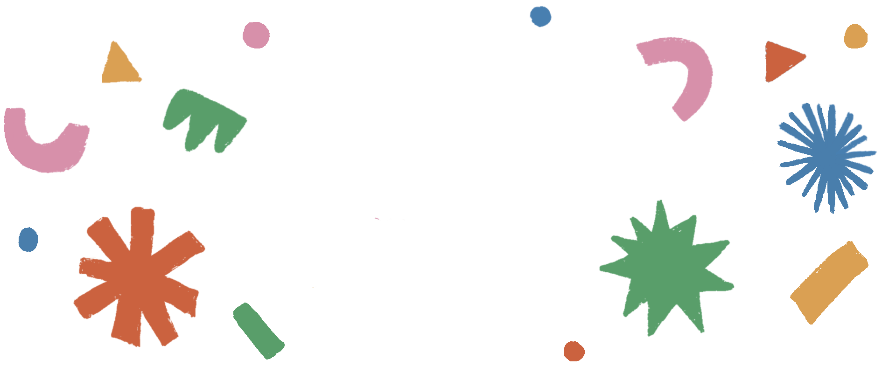

ENTDECKE DIE GEBÄRDENSPRACHE!


SCHÖN, DASS DU DA BIST!
Dieses Projekt ist dein bunter Einstieg in eine Welt, in der man mit
den Augen „hört" und mit den Händen „spricht". Wenn wir lernen, auf
unterschiedliche Arten miteinander zu kommunizieren, bauen wir
Barrieren ab.
So einfach funktioniert es: Scanne mit deinem Smartphone die QR-Codes
direkt neben den Stickern im Heft. Dadurch öffnet sich sofort das
passende Video. Schau dir die Gebärde genau an und mach sie einfach
nach. Viel Spaß beim Entdecken!